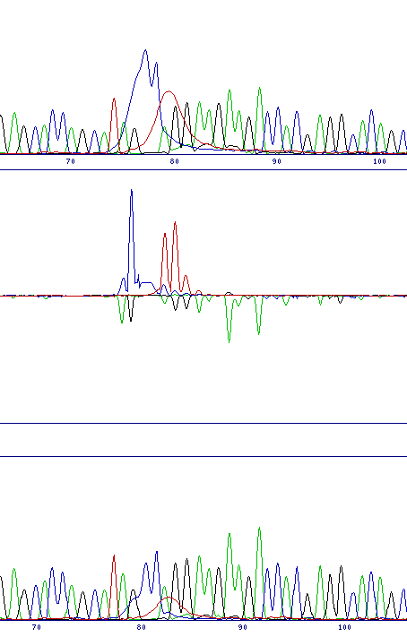
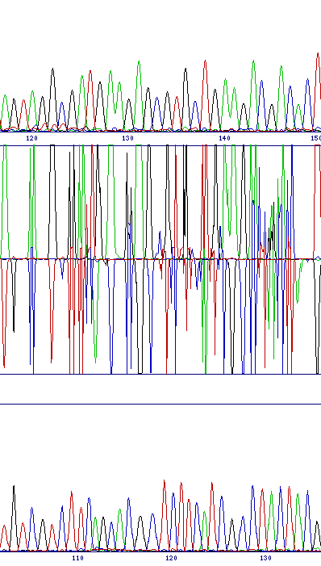
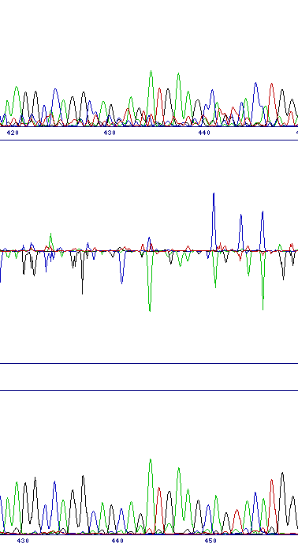
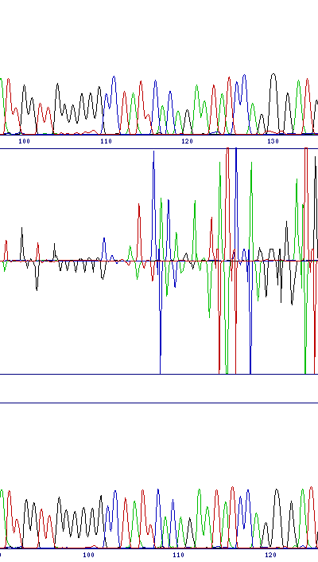

Although this software is written to highlight genuine differences between sequence traces, there are a few situations which can generate artifactual results. Also there are cases where, for various reasons, automatic alignment of the sequences fails. Finally, like all other software, this program obeys the 'junk in, junk out' rule - if you put in poor quality sequence data, then don't expect it to work well.
To date the program has only been tested using templates sequenced in the same direction from the same primers, although we predict that it would work using different primers as long as the two sequence traces start close enough together to allow automatic alignment. However because peak heights are affected by the surrounding sequence, we don't think that templates sequenced in opposite directions and one reverse-complemented would work. We would be grateful to hear from anyone who tries this as to whether it works or not.
Below are examples of commonly (and less commonly) encountered problems together with explanations and, where possible, solutions.
| Dye-blob noise | |
|---|---|
| Dye blobs are relatively common early in a sequence trace. These blobs are easily distinguished by eye from genuine base calls, but are not filtered by the comparison program and so still generate peaks in the difference profile. However the pattern of these peaks is very different to that of substitution or frameshift mutations, and inspection of the sequence traces at that point will show the broad peaks characteristic of dye blobs, rather than narrow base peaks. N.B. A mutation might occur in the region of the dye-blob, so check to make sure that this noise does not mask a genuine signal |
 |
| Unaligned sequences | |
| Misalignment of sequences can occur if the sequence traces start at intervals of more than about 20bp, or if an attempt is made to compare different sequences. In this case the two sequences will be different throughout, so there will be a very noisy difference profile for the whole length of the 'alignment'. No usable data will be obtainable in these cases. |  |
| Poor quality sequence | |
| Poor quality sequence will result in a noisy difference profile, and can generate peaks that superficially appear like substitutions. This case will generally be obvious because there will be many peaks in a noisy background, rather than just a single peak with little background noise (and of course the sequence data trace at that point should confirm this diagnosis). |  |
| Sequence compression | |
| Sequence compression or expansion can be caused by gel or template DNA variation. If the peak spacing interval varies too much between the reference and test samples, the alignment algorithm may be unable to keep the two traces aligned, and the difference trace will go out of phase. If this cannot be resolved by modifying sequencing conditions, it can sometimes be compensated for by a local installation of SeqDoC using non-standard parameters. (Thanks to Dr Ana Topf for this information) |  |